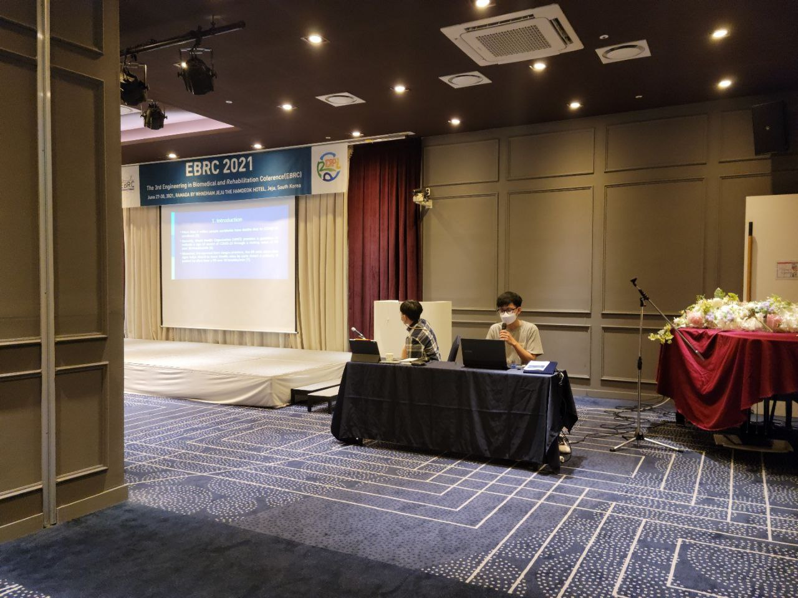
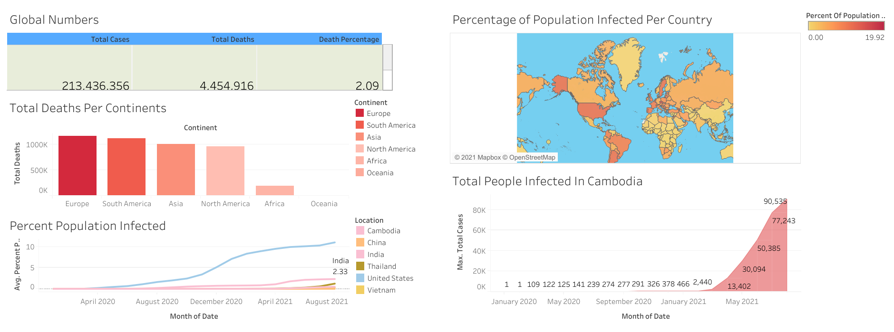
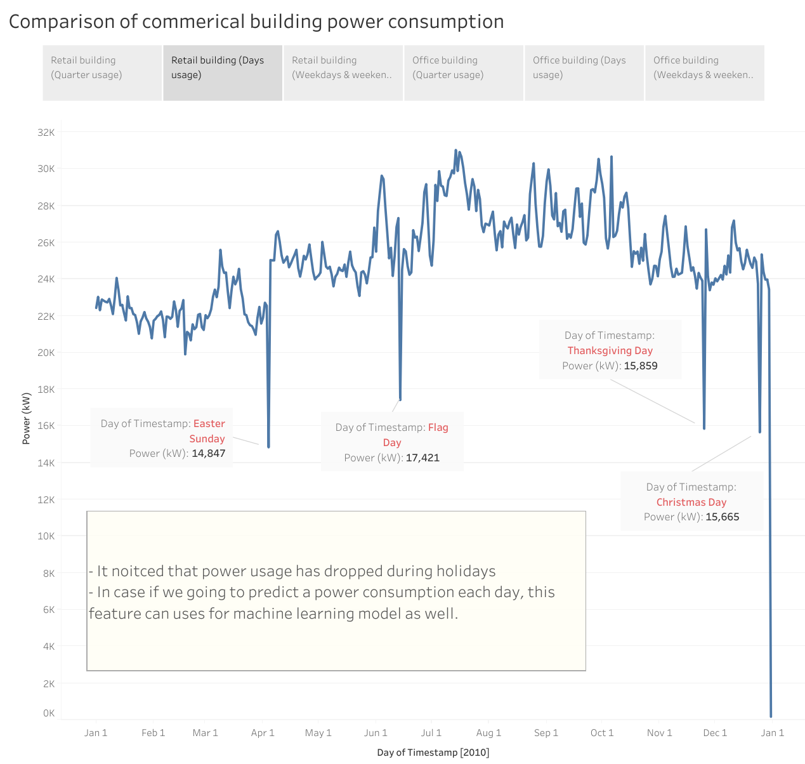
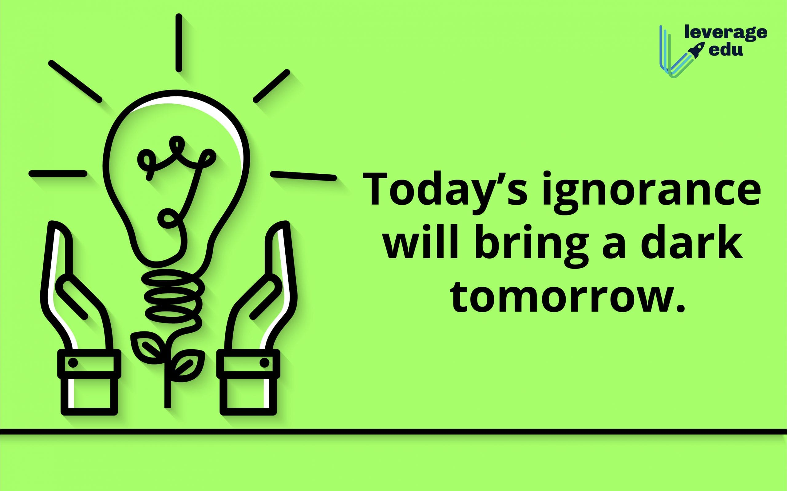

I was a student researcher who received a scholarship to study at Soonchunhyang University (South-Korea) in the Department of ICT Convergence.
During two years of my master's degree, I have spent most of my time doing projects related to data analysis, data visualization, and machine learning.


In this project, we used a Tableau desktop to visualized a COVID-19 global infections, and deaths cases.

In this project, we had visualized an electricity power consumptions of commerical buildings in the United States.

We used SQL and SQL Server to explore global COVID-19 data.
We used Python and Jupyter Notebook to explore a electricity power consumptions of commerical buildings.
We had classified a five types of electrocardiogram signals (heart diseases) by used a machine learning technique.

Forecast an electricity power consumptions of commerical buildings by used a simple deep learning LSTM model.